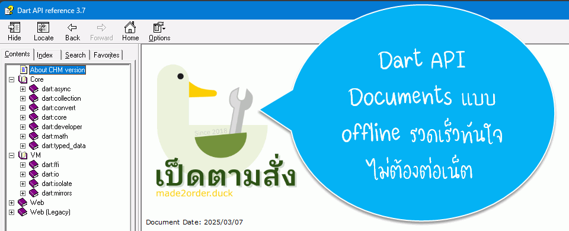

Dart: Dart API Documents แบบ Offline (chm format)

อยากได้ต้องทำเอง ปัญหาที่พบเวลาเขียนโปรแกรมด้วย Dart นั้นคือต้องคอยเปิดเว็บ Dart API ไว้ดูข้อมูลต่าง ๆ เช่น Class method ฯลฯ ซึ่งถ้าเปิดนิดหน่อยก็ไม่น่ามีปัญหา แต่พอต้องเปิดดูตลอด (ก็ Class มันเยอะมาก) มันเริ่มมีปัญหาว่ากว่าจะเข้าถึงเอกสารที่ต้องการ มันนาน โอเคมันไม่ได้นานมาก แค่หลัก 1-2 วินาที แต่พอเยอะ ๆ เข้า มันเริ่มเห็นว่ามันไม่สะดวก และที่สำคัญคือ ไม่เห็นโครงสร้างของ API ชัดเจน อ่านไปมึนไป เลยกลับมาคิดว่าสมัยที่เขียน PHP ตอนนั้น internet ช้ากว่านี้มาก ๆ พวกเอกสาร API ต่าง ๆ ใช้เวลาโหลด offline มาเปิดที่เครื่องเอา ซึ่งสะดวกรวดเร็วมาก ๆ เลยคิดว่าทำแบบ offline ไว้ค้นข้อมูลน่าจะสะดวกกว่ามาก สมัยนั้นเป็นไฟล์แบบ Microsoft® HTML Help
TL;DR หากใครต้องการดาวน์โหลดไปใช้งาน สามารถดาวน์โหลดได้ที่ Github
Dart API Documents แบบ Offline
ผู้ใช้งานทั่วไปสามารถดาวน์โหลดตัว offline ที่เป็นไฟล์ html เก็บไว้ใน zip ได้ที่เว็บ Archive | Dart สามารถเลือก version ที่ต้องการได้เลย
ตำแหน่งสำหรับดาวน์โหลด offline API Documents
เมื่อดาวน์โหลดมาแล้ว พบว่าโครงสร้างไฟล์จะแยกเป็นโฟลเดอร์ตาม module เรียบร้อยดี ปัญหาที่พบคือ มันเป็นไฟล์ที่ออกแบบมาใช้กับเว็บเซิร์ฟเวอร์ ทำให้เวลาคลิกดูเอกสารหน้าหลัก จะไม่เปิดไฟล์ index.html โดยตรง วิธีแก้ไขคือ สร้างเว็บเซิร์ฟเวอร์บนเครื่องของเรา ซึ่งก็ไม่ยาก แต่ไม่สะดวก แถมค้นหาข้อมูลไม่ได้อีกต่างหาก วิธีนี้เลยพับไป
ไฟล์ Microsoft® HTML Help โบราณแต่สะดวก
ไฟล์ Microsoft® HTML Help หรือไฟล์ chm ถูกปล่อยออกมาเมื่อปี ค.ศ.1997 เป็นรูปแบบชุดเอกสารที่ออกแบบมาเพื่อใช้แทนระบบ WinHelp เนื่องจาก WinHelp มีข้อจำกัดและสร้างยาก ส่วนตัวแม้ตัวโปรแกรม Microsoft® HTML Help Workshop ที่ใช้สำหรับ compile ตัวไฟล์ HTML ที่ต้องการเป็น chm จะมี GUI แล้ว แต่เอาเข้าจริง มันใช้งานยากพอสมควร learn curve ค่อนข้างสูง ส่วนตัวเคยใช้งานแล้วอ่านวิธีใช้ไม่ค่อยเข้าใจ จนใช้วิธี decompile ไฟล์ chm ที่มีออกมาดูเป็นตัวอย่างแทน
หน้าตา chm viwer ที่ใช้ดูเอกสาร Microsoft® HTML Help
ปัจจุบันในยุคที่มี internet ความเร็วสูง ทำให้บทบาทของไฟล์ chm น้อยลงมาก ๆ เรียกว่า Microsoft® ไม่สนใจพัฒนาต่อแล้ว เท่าที่มีข้อมูลคือ HTML Help 2.x แต่ไม่เคยออกสูสาธารณะ ทุกวันนี้โปรแกรมทั่วไปนิยมเปิด website เพื่อดูวิธีใช้โดยตรงกันมากกว่า
แนะนำวิธีใช้งาน
ไฟล์ chm จะรวบรวมไฟล์ HTML CSS และอื่น ๆ เข้าด้วยกันเป็นไฟล์เดียว วิธีใช้แค่ดับเบิ้ลคลิกเพื่อเปิดไฟล์แค่นั้นเลย ตัว sitemap หรือ Table of contents สามารถเลือกได้จากด้านซ้ายมือ โครงสร้างทั้งหมดจะสามารถตอบสนองได้ทันที จะหุบ จะกาง ได้รวดเร็วทันใจ แต่ตัวหนังสืออาจตัวเล็กไปหน่อย
หน้าตาตัว chm สำหรับ Dart
เมื่อต้องการค้นหา หากรู้ชื่อ class method หรือสิ่งที่ต้องการ แนะนำว่าให้ค้นจาก Index ได้ เช่น จะหา String class ก็พิมพ์ string ก็จะมี String class มาให้เลือก
ค้นหาสิ่งที่ต้องการจาก Index
สำหรับการค้นหาแบบ full text search สามารถใช้งานได้ แต่ผลที่ได้ออกมาไม่ค่อยประทับใจ ใช้ในกรณีที่นึกไม่ออกว่าจะค้นใน Index ว่าอะไร แต่นึกออกถึงคำที่อธิบายการใช้งาน หากข้อความที่ค้นมีช่องว่าง จะเป็นการค้นหาแบบแยกคำค้น แต่หากต้องการให้ค้นทั้งคำให้ใส่เครื่องหมายคำพูด เช่น "tcp protocol"
ตัวอย่างการค้นหาจาก full text search
สามารถบันทึก bookmark หัวข้อที่จะกลับมาดูภายหลังด้วย Favorites
ตัวอย่างการ bookmark หัวข้อเพื่อกลับมาอ่านภายหลังได้
เบื้องหลังการแปลงข้อมูล
เนื่องจากตัว Dart API Documents สร้างบนพื้นฐานบนการใช้งานเว็บเบราเซอร์รุ่นใหม่ ๆ แล้วแต่ตัว chm นั้นยังยึดติดกับ Internet Explorer สมัยก่อนจะมาเป็น Edge ดังนั้นหากเอาไฟล์มารวมแล้วเปิดใน Viewer จะพบปัญหามากมาย จึงจำเป็นต้องตัดความสามารถต่าง ๆ ออกไปเยอะพอสมควร นอกจากนี้ยังต้องดัดแปลงแก้ไข CSS รวมถึงการรวมเอาข้อมูลจาก left sidebar ที่เป็นไฟล์แยก มารวมไว้กับไฟล์หลักโดยตรง (ของเดิมทำงานด้วย Javascript อ่านข้อมูลมาแสดงผล)
เพื่องานนี้เลยใช้เวลาเขียนโปรแกรมด้วยภาษา Dart ไป 1 สัปดาห์ ผลที่ได้เป็นโปรแกรมขนาด 500 บรรทัด จริง ๆ เขียนเยอะกว่านี้ เพราะต้องทำงานและทดสอบมีแก้ไขปัญหาเยอะมากเนื่องจากใช้เวลาแกะ HTML โดยตรง (Reverse Engineering) เพื่อดึงส่วนที่ต้องการมาทำ TOC index และยังต้องแก้ไข links ให้เชื่อมโยงเอกสารได้ให้ถูกต้องด้วย
ตัวแปลงเขียนโดยภาษา Dart ใน Visual Studio Code
สำหรับ code ทั้งหมดไม่ได้เอาขึ้น Github เพราะว่าไม่อยากมาคอย support ตอบคำถามเกี่ยวกับโปรแกรมนี้ ไม่ได้เขียนให้คนอื่นอ่านเข้าใจง่าย ๆ ไม่ได้เขียนเอกสารชัดเจน มีแค่ note ภาษาไทยเขียนไว้เป็นข้อ ๆ เท่านั้น
สำหรับการ update ก็หากยังเขียนโปรแกรมด้วยภาษา Dart ก็คง update ตาม official เรื่อย ๆ อาจจะทำปีละ 1 - 2 ครั้ง เผื่อมีคนที่อยากใช้แบบ offline เหมือนกัน